Discover Pakistan: Alpine Expeditions, Heritage & Travel Dossiers
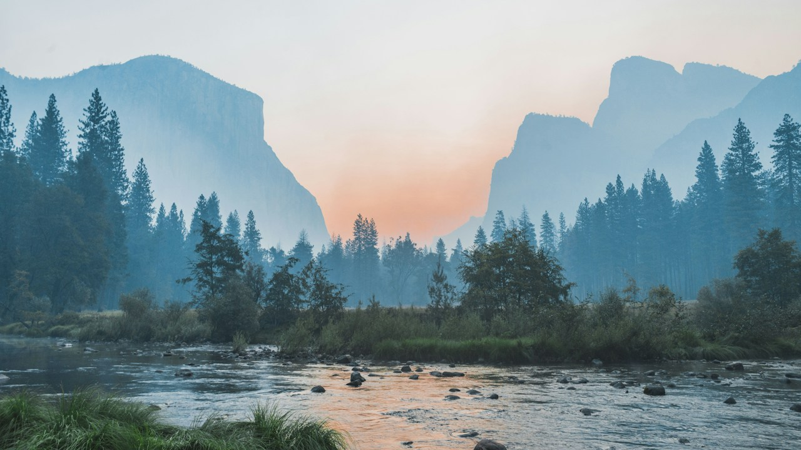
سفری شاہکار 🍂ہنزہ اور وادی نگر کا سنہری خزاں: راکاپوشی، التیت اور بلتت قلعے کا مکمل سفرنامہ
اکتوبر اور نومبر میں وادی ہنزہ کے خوبانی اور چنار کے درخت سونے کی طرح چمک اٹھتے ہیں—شمالی علاقہ جات کی سب سے سحر انگیز موسمی مہم۔
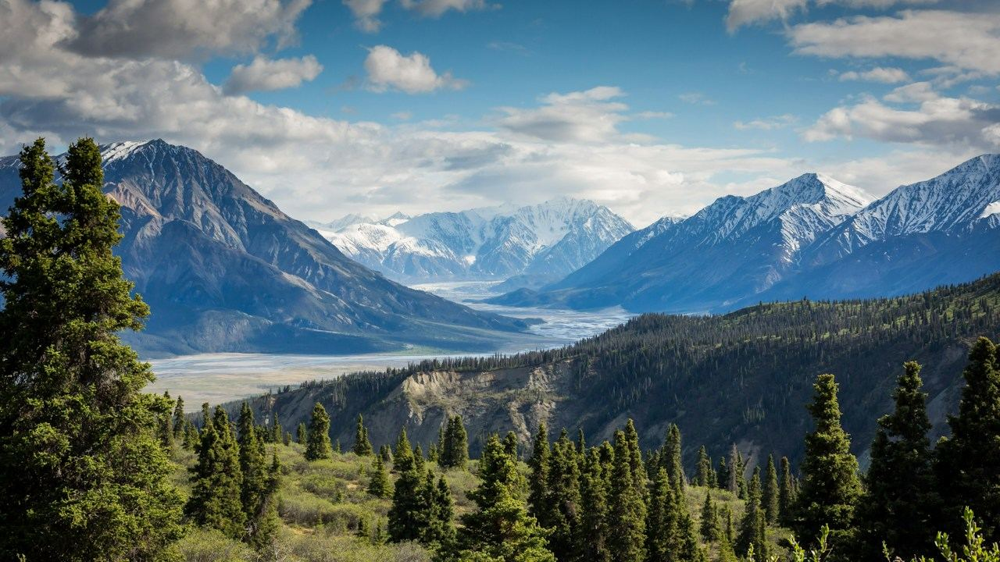
سکردو، شنگریلا اور خپلو محل: بلتستان کے صحرا اور برفانی جھیلوں کی دنیا
کے ٹو کا گیٹ وے، کٹپانہ کا سرد صحرا اور نیلگوں جھیلیں—بلتستان کے سحر انگیز عجائبات کی تفصیلی سفری دستاویز۔
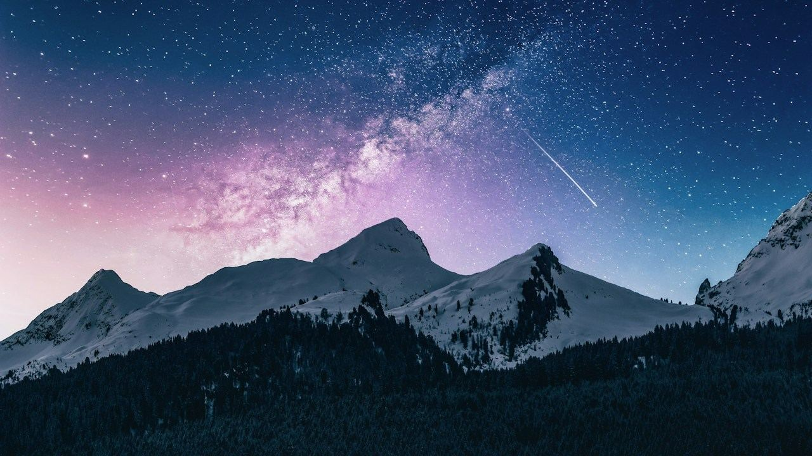
دیوسائی نیشنل پارک: دنیا کے بلند ترین میدان کی پراسرار خوبصورتی اور شیوسر جھیل
سطح سمندر سے 4000 میٹر بلند دنیا کی چھت پر نایاب ہمالیائی بھورے ریچھ، نیلگوں جھیلیں اور جنگلی پھولوں کا سمندر۔
کمرات ویلی اور جہاز بانڈہ کٹورا جھیل: خیبر پختونخوا کا پوشیدہ قدرتی شاہکار
دریائے پنجکوڑہ کا شفاف پانی، دیودار کے صدیوں پرانے گھنے جنگلات اور 11,500 فٹ پر واقع کٹورا جھیل کا ٹریک۔
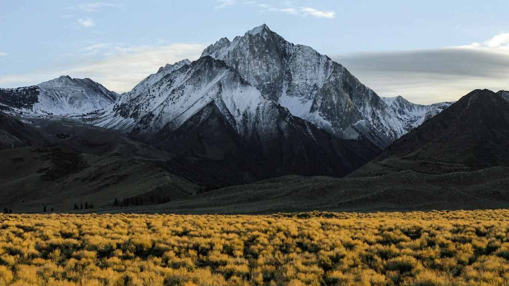
قراقرم ہائی وے 🌉پاسُو کونز اور حسینی پل: شاہراہ قراقرم کا سحر انگیز ایڈونچر اور وادی گوجال
کیٹھیڈرل کی طرح ایستادہ نوکیلی چوٹیاں، لکڑی کا لٹکتا ہوا خطرناک حسینی پل اور بورتھ جھیل کے دلفریب مناظر۔
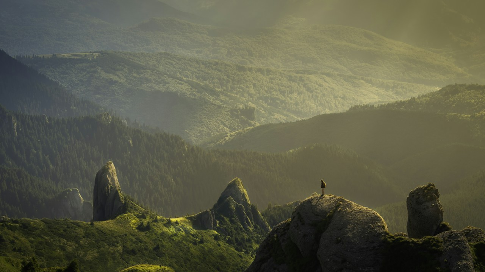
الپائن ٹریک 🏔️فیری میڈوز اور نانگا پربت: قاتل پہاڑ کے سائے میں کوہ پیمائی اور ایڈونچر کا خواب
رائے کوٹ پل کی اعصاب شکن جیپ رائیڈ، صنوبر کے جنگلات اور نانگا پربت (8,126 میٹر) کی دیو ہیکل شمالی دیوار کا سحر۔
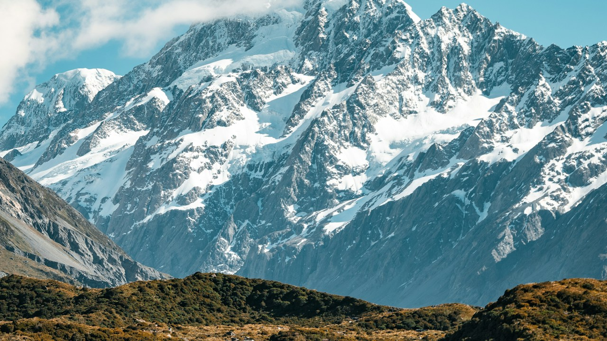
EXPEDITION DOSSIERHunza Valley Autumn Dossier: Golden Poplars, Rakaposhi & Silk Road Forts
When October arrives, the terraced orchards of Upper and Central Hunza erupt into fiery shades of amber, gold, and crimson against snow-capped giants.
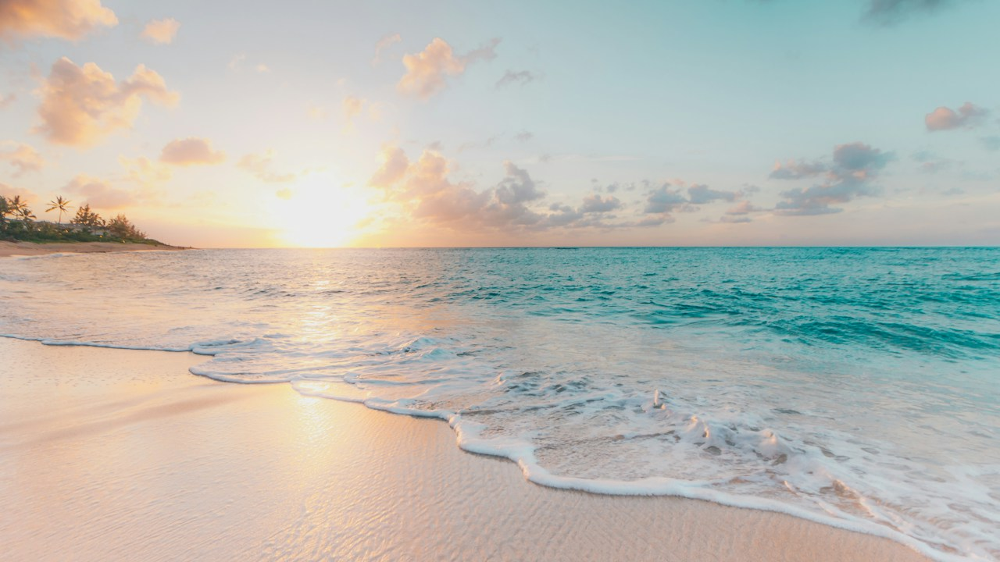
K2 GATEWAYSkardu & Shangrila: Gateway to the High Karakoram & Cold Desert Dunes
From the turquoise mirror of Lower Kachura Lake to the snow-dusted dunes of Katpana, Skardu bridges alpine wilderness and high-altitude desert.
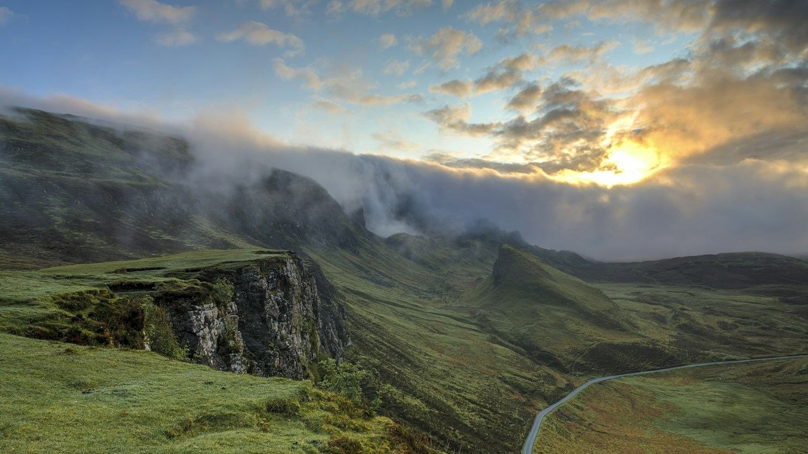
ALPINE PLATEAUDeosai National Park: The 4,000m Alpine Plateau of the Himalayan Brown Bear
A rolling expanse of glacial streams, wild alpine flora, and the crystalline mirror of Sheosar Lake set across Asia’s highest wildlife plateau.
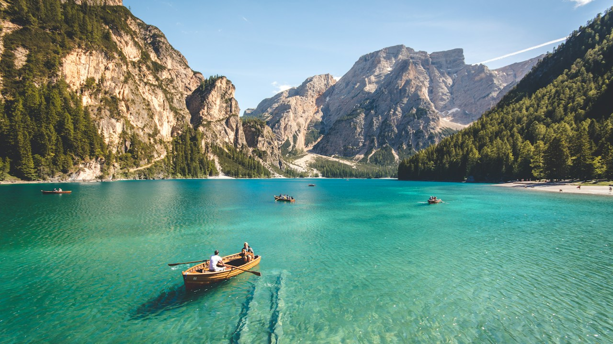
GLACIAL LAKESPassu Cones & Attabad Lake: The Turquoise Marvel of Upper Hunza
Carved by ancient glaciers and seismic shifts, Upper Hunza reveals the Cathedral Peaks of Passu and the turquoise waters of Attabad.
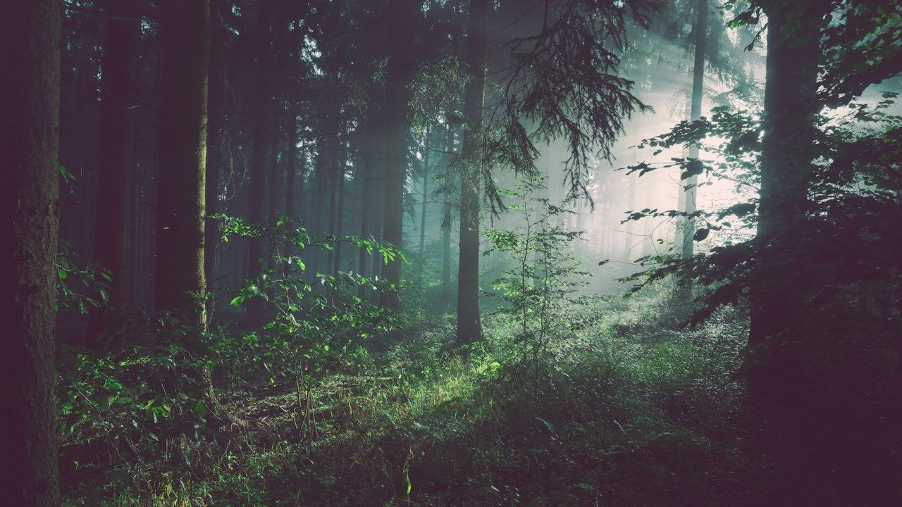
VALLEY EXPLORATIONKumrat Valley & Panjkora Cascades: Khyber Pakhtunkhwa’s Pine Wilderness
Towering Deodar canopies, roaring crystal streams, and remote shepherd trails make Kumrat the ultimate wilderness escape.
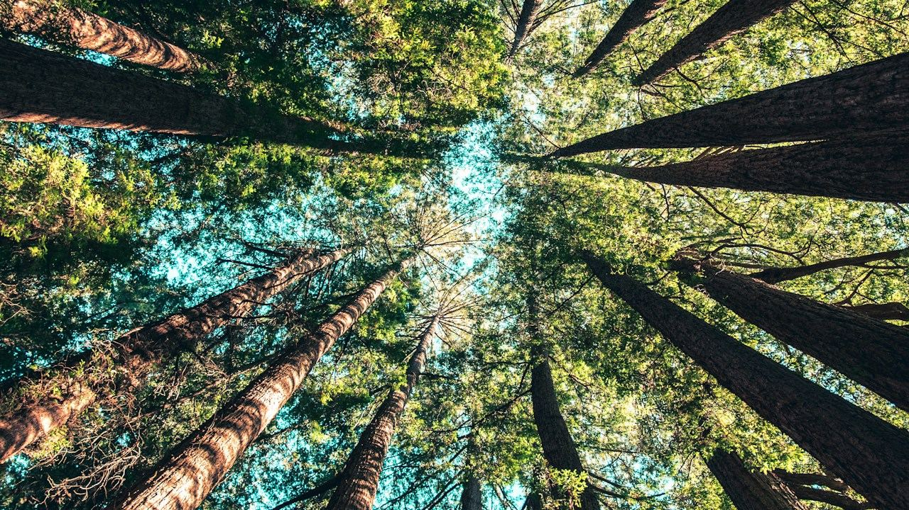
LIVING HERITAGEKalash Valleys: Ancient Polytheistic Heritage in the Rugged Hindu Kush
Surrounded by the cedar slopes of Chitral, the indigenous Kalash people preserve centuries of animist rituals, music, and embroidery.
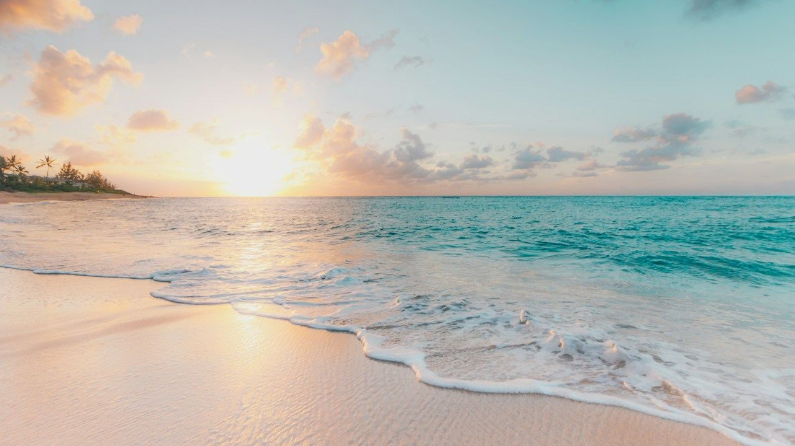
COASTAL HIGHWAYMakran Coastal Highway: The Mud Volcanoes & Golden Shores of Balochistan
Winding 653 kilometers along the Arabian Sea, N-10 reveals the Princess of Hope, the Sphinx of Balochistan, and secluded beaches.